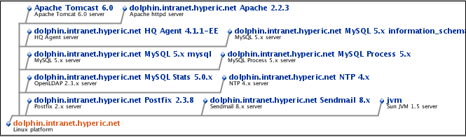
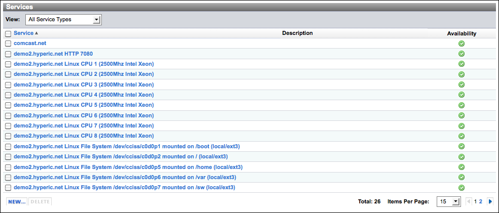

Topics marked with * relate to features available only in vFabric Hyperic.
This page describes the contents of the Inventory page for a platform.
| Learn about Platforms See Hyperic Inventory Model. |
Feedback is welcome. Click Add Comment at the bottom of the page.
Navigate to the Inventory Page for a Platform
To display the Inventory page for a platform, use Resources > Browse > Platforms to navigate to the platform, and click the Inventory tab.
| See a Screenshot of a Platform's Inventory Page Click to open a screenshot in a separate window with screenshot. (You may need to enlarge the font or windows size to zoom in.) |
Inventory Page Header
The sections below describe the data and controls that appear at the top of the Inventory page for a platform.
Resource Properties
The properties at the top of the Inventory page for a platform provide identifying information about the managed product. The inventory properties displayed for a platform vary slightly by platform type, but typically will include most of these properties.
The properties displayed in the screenshot below are:
- Description
- Owner - By default, the Hyperic user under whose account the resource was added to inventory. Click Change... to assign a different resource owner.
- Secondary DNS
- Default Gateway
- Vendor
- Vendor Version
- IP Address
- Primary DNS
- CPU Speed
- OS Version
- RAM
- Architecture

| The plugin developer controls which resource properties are displayed at the top of a resource's Inventory page: any properties enclosed in a <properties> element for a resource type appear in the page header when you browse to an instance of that type. |
Map Control for a Platform
Click the Map control in the page header for a graphical view the servers on the platform. The platform is displayed at the bottom of the map; servers are displayed above the platform. Resource names are in bold and the resource type is displayed just below in smaller type. Click a resource name to navigate to that server.

Tools Menu for a Platform
The screenshot below is the Tools menu for a platform.

When a platform is selected, the Tools menu has the following commands:
- Configure Platform — Opens the Configuration Properties page for the platform, where you can edit the resource's configuration properties.
- Clone Platform — Creates a new platform with the same configuration as an existing platform. For more information, see Clone a Platform.
- Delete Platform — Delete the platform, its platform services, servers, and the services in the servers from inventory.
- New Server — Displays the New Server page, where you can manually add a new server to the platform. (For instance, a server that was not auto-discovered.) For more information, see Create a Server.
- New Platform Service — Displays the New Service page, where you can manually add a new service, for instance a remotely monitored network service, to the platform. For more information, see Create a Platform Service.
- New Auto-Discovery — See Scan a Platform On-Demand
- Enable All Alerts On This Agent —
- Disable All Alerts On This Agent
- Add to Dashboard Favorites — Adds the platform to the Favorite Resources portlet on the the current Hyperic user's Dashboard.
- Add to Group — Opens the Group Manager page, which lists the groups to which the platform may be added. You can add a platform to a group if:
- You have permission to access the group, and:
- The group is a mixed group that contains platforms, servers, and services.
- The group is a compatible group of the selected platform's platform type.
- You have permission to access the group, and:
General Properties for a Platform
The General Properties section of the Inventory page for a platform lists the following information:
- Description — A description of the platform. This is an optional, user-configured value.
- Date Created — The date the platform was added to the Hyperic inventory
- Location
- Date Modified, Modified By — The date the platform was last modified and the user who modified it.
- Resource Type — The platform type.
Click the Edit button to open a page where you can edit the platform's Name or Description.

Type and Network Properties for a Platform
The Type and Network Properties section of the Inventory page for a platform lists the following information:
- Platform Type — The type of platform (This value cannot be changed.)
- Agent Connection — The IP address:port pair that the Hyperic Server will use to connect to the Hyperic Agent on the platform device.
- In the case of a platform type that is monitored by a Hyperic Agent on a different platform, such as a network or virtual host, this property identifies the agent that manages the platform.
- Fully Qualified Domain Name — The platform's FQDN.
- IP Address, MAC Address, Netmask — One or more sets of these identifiers for the platform. There is at a minimum one set for the loopback (local) IP address — 127.0.0.1 — and then additional sets for each network interface on the device.
Click the Edit button to open a page where you can selected platform properties.

Servers on a Platform
The "Servers" section lists the following information for each server on the platform.
- Server — The resource name, presented as a hyperlink you can click to navigate to the server.
- Server Type
- Install Path
- Description
- Availability — Current availability of the server.
There are two controls available:
- New — Click to add a server to the platform.
- Delete — Click to delete a server from the platform. Services in the server will also be deleted.

Services on a Platform
This section lists the following information for each platform service on the platform:
- Service — The resource name, presented as a hyperlink you can click to navigate to the service.
- Description
- Availability — Current availability of the platform service.
There are three controls available:
- View — This pull-down allows you to filter the list to display only platform services of a selected type.
- New — Click to add a platform service to the platform.
- Delete — Click to delete a platform service from the platform.

Groups Containing a Platform
This section lists the following information for each the group of which the platform is a member.
- Group — The resource name, presented as a hyperlink you can click to navigate to the group.
- Description
There are two controls available:
- Add to List — Click to add the platform to a group.
- Remove From List — If you have checkmarked one or more groups in the list, this control allows you to remove the resource from the selected groups.

Configuration Properties for a Platform
This section displays the configuration properties for the platform.
- Shared — These properties are typically only present for platform types that Hyperic does not auto-discover, and vary by platform type.
- Monitoring — These properties control log and configuration tracking for the platform. For more information see event tracking in Configure Monitoring Options.

{kind=link}
{kind=link}
{kind=link}
{kind=link}